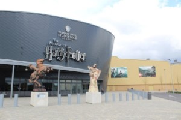
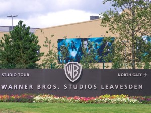
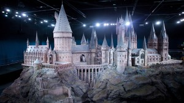
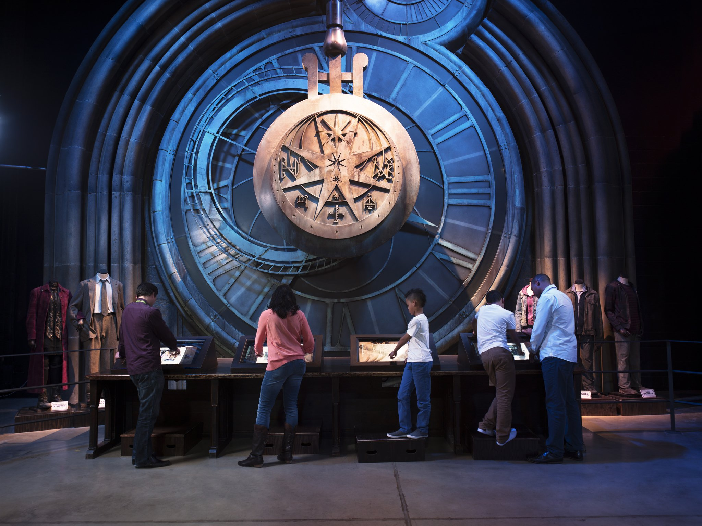
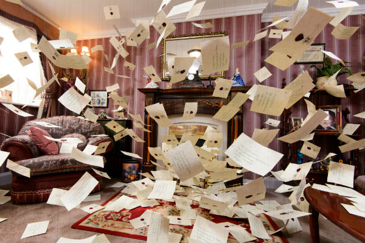
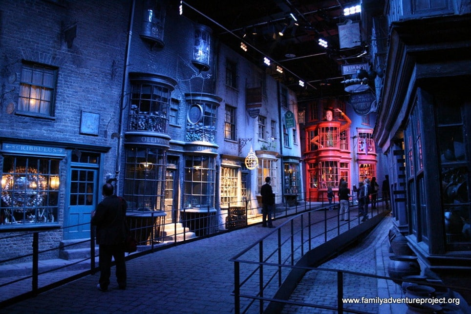

Warner Bros Studios
El hogar de Harry Potter
En 2000, un emprendedor equipo de producción se dirigió a un estudio de cine en las afueras de Londres. Los productores trejeron consigo una idea para una película basada en un niño con una cicatríz relámpago que, en su undécimo cumpleaños, se entera de que es un mago.
Esa historia era Harry Potter y la piedra filosofal y ese estudio era Levesden.
 
Los primeros cuatro libros de Harry Potter de J.K.Rowling habían subido a los primeros puestos de las listas de los más vendidos de todo el mundo. Los directores, el elenco y el equipo tenian ahora la tarea de llevar a la elite en la gran pantalla un mundo mágico que era amado por millones de personas.
Cientos de hombres y mujeres talentosos se reunieron en los estudios Leavesden para dar inicio a más de una década de producción
Con cada nueva película, el fenómeno de Harry Potter creció, y pronto los siete libros que encantaban al mundo se habían convertido en la serie de películas más grande de la historia.
Historia
El aeródromo de Leavesden fue un campo de aviación británico creado en 1940 por la de Havilland Aircraft Company y el Ministerio del Aire en el pequeño pueblo de Leavesden, entre Watford y Abbots Langley, en Hertfordshire. Fue un importante centro de producción de aviones durante la Segunda Guerra Mundial. Al final de la guerra, el aeródromo de Leavesden era, por volumen, la mayor fábrica del mundo
Una vez terminada la guerra, Rolls-Royce se encargó de adquirir el aeródromo, que se mantuvo durante décadas hasta los años 90. Finalmente quedó abandonado.
En 1994, la producción de la película James Bond descubrió el aeródromo desocupado y lo alquiló para grabar la película GoldenEye. Gracias a su fama, multitud de películas empezaron a rodarse allí hasta que en el año 2000 llegaría la saga de Harry Potter de la mano de Warner Bros.
A finales de 2010, Warner Bros compraría estos estudios para albergar una exposición pública permanente a la que denominó Warner Bros. Studio Tour London – The Making of Harry Potter, creando 300 nuevos puestos de trabajo en la zona.
   